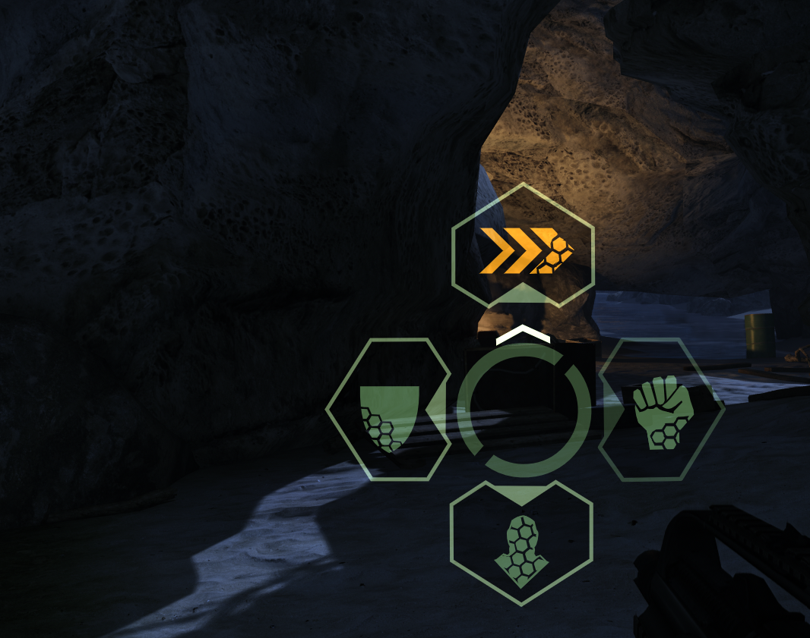
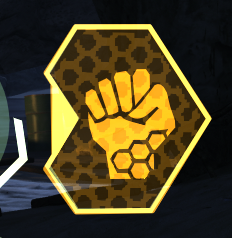
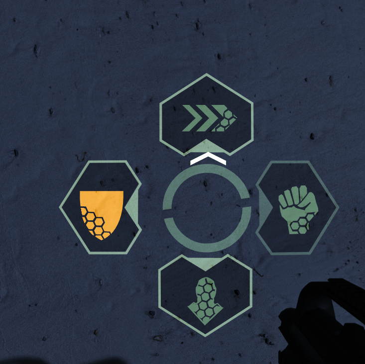
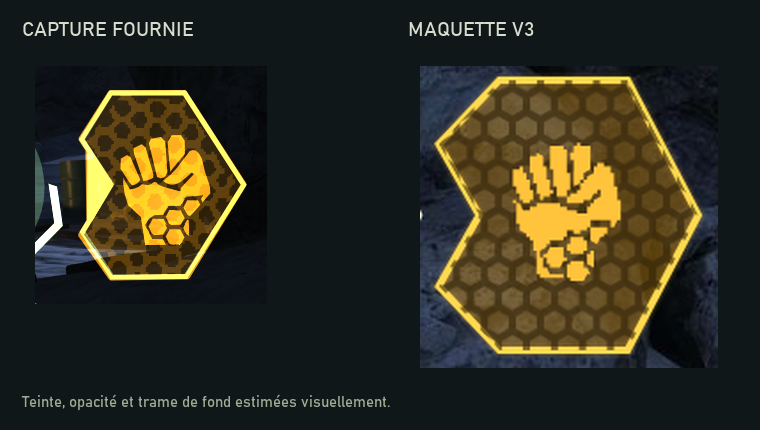
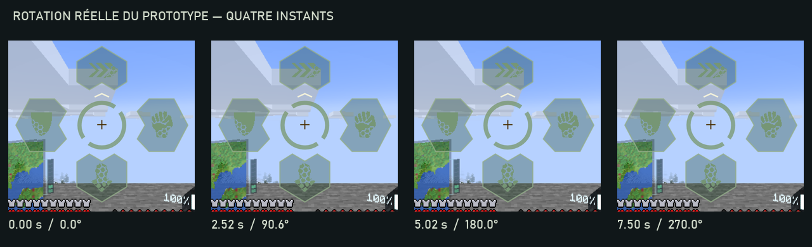

Les tracés des quatre icônes V2 sont inchangés. Les positions sont alignées sur ces nouvelles captures, avec l'accord de l'utilisateur. La scène Minecraft claire et la scène Crysis sombre servent à contrôler la transparence.
Le sens de rotation ne peut pas être établi depuis ces images fixes. Les teintes et les opacités sont des estimations visuelles, détaillées dans les notes.

Neutre · Force · Vitesse · Force sur fond sombre · Neutre sur fond sombre

Quatre instants de la rotation réelle du prototype · SVG animé transparent